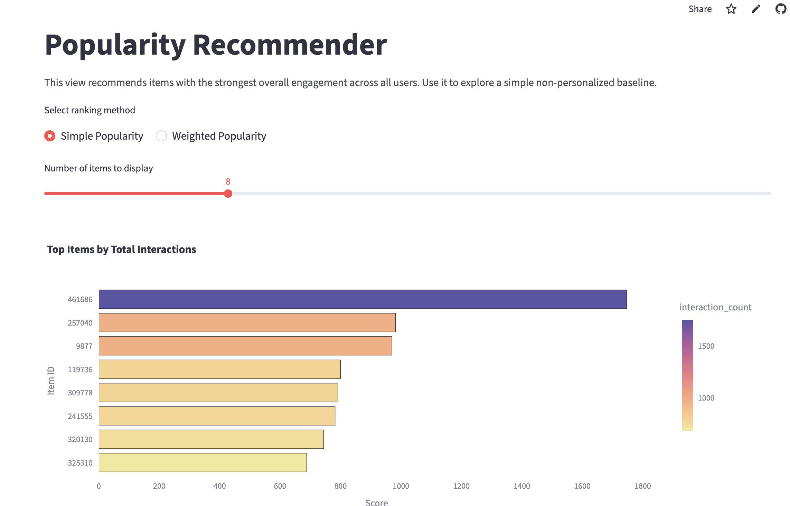
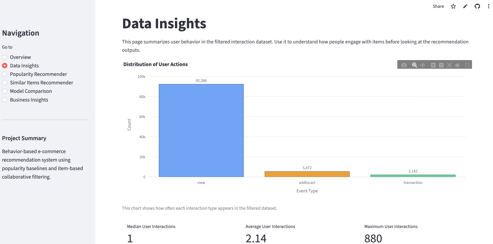
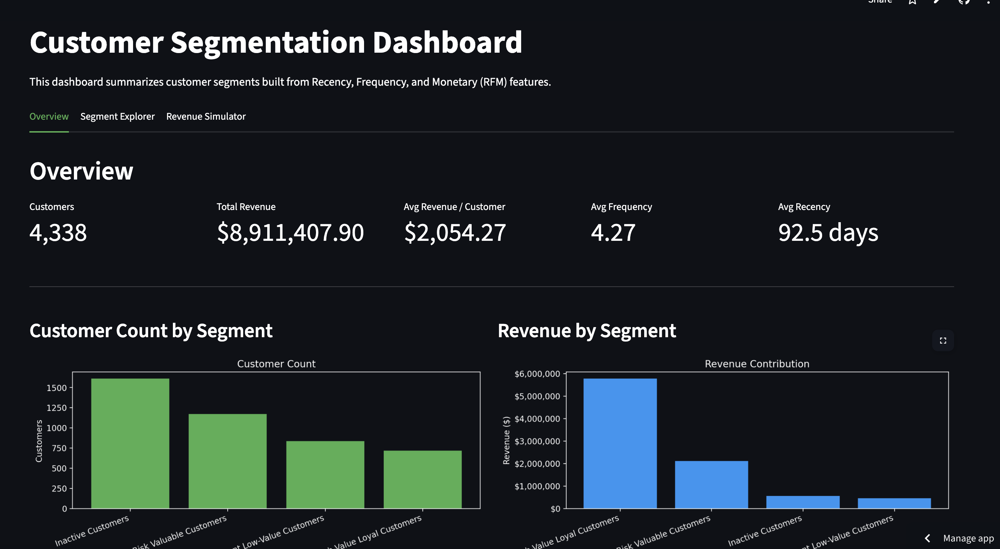
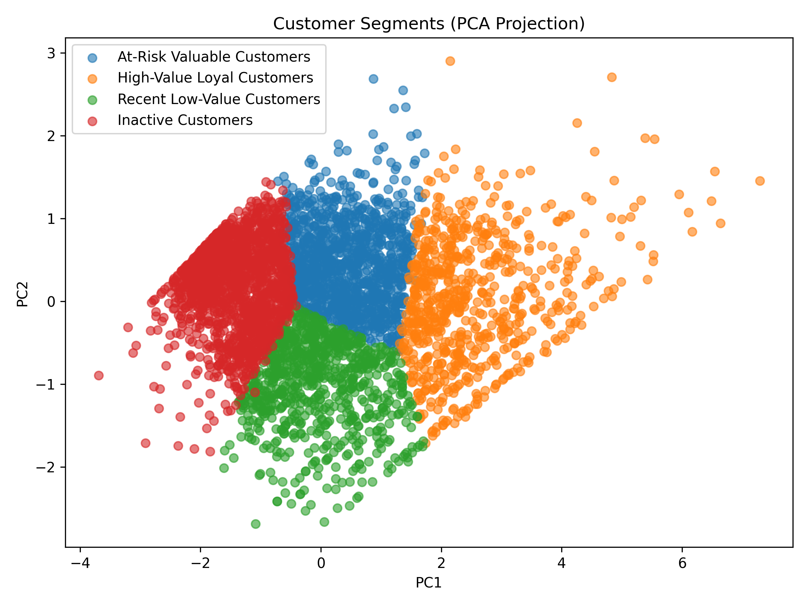
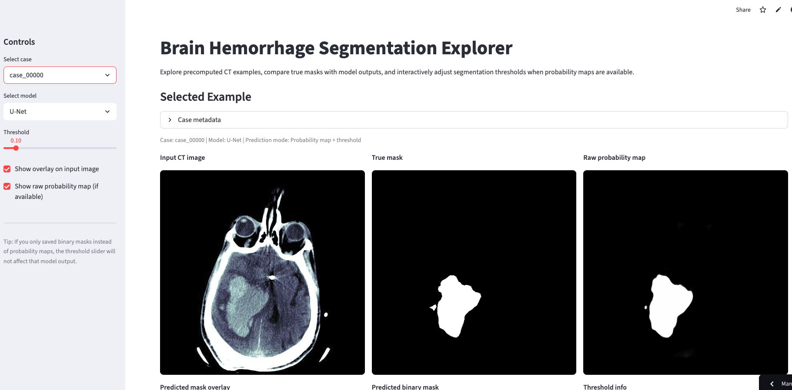

Roshan Moazed
Applied Mathematics MS Student @ Northeastern | Data Science and Machine Learning
About
I am a Master's student in the Applied Mathematics program at Northeastern University graduating in May, 2027. I have experience building machine learning systems for real-world applications and am particularly interested in retail and e-commerce. I am especially drawn to problems involving customer behavior, personalization, and recommendation systems.
Featured Project
E-Commerce Recommender System
Built an end-to-end recommendation system using real e-commerce interaction data. Compared popularity-based simple and weighted recommendations with item-based collaborative filtering and deployed the final system in an interactive Streamlit dashboard. The collaborative filtering model improved Hit Rate at 10 by about 4.3x over the baseline.
Note: Some apps may take a few seconds to load or require reactivation if they have been inactive.
View Live App | GitHubApp Preview


Projects
Note: Some apps may take a few seconds to load or require reactivation if they have been inactive.
Customer Segmentation and Targeted Marketing
Developed a customer segmentation system using retail transaction data to group customers into distinct behavioral segments. Built an interactive dashboard to explore segment characteristics and simulate how different targeting strategies could influence revenue and marketing impact.
View App | GitHubApp Preview


Bike Demand and Pricing Optimization
Built a machine learning pipeline to predict bike rental demand and extended it into a pricing optimization framework using adjusted demand, elasticity and a baseline price. Created a Streamlit app to simulate pricing scenarios, estimate revenue impact, and show how pricing decisions interact with predicted demand.
View App | GitHubApp Preview
Brain Hemorrhage Segmentation and Classification
Built a computer vision pipeline for brain hemorrhage image segmentation and classification using multi-view medical imaging data. This project involved intensive preprocessing, image-based modeling such as U-Net and ResU-Net models, and deployment through an interactive Streamlit app, and is one of my most technically intensive machine learning projects.
View App | GitHubApp Preview

Skills
Programming: Python, SQL, pandas, NumPy Machine Learning & AI: scikit-learn, Recommendation Systems, NLP, LLMs, Text Embeddings Data: Data Preprocessing, Feature Engineering, Model Evaluation Tools: Streamlit, Data Visualization Additional: Vector Databases, OpenAI API